# theoretical pmf table of p-hat with p=0.5 for some n
p.hat.theory = \(n,p=0.5) data.frame(p.hat=0:n/n,prob=dbinom(0:n,n,p))
# MC-simulated distribution of p-hat with p=0.5 for some n
p.hat.mc = \(n,p=0.5,M=1e5) rbinom(M,n,p)/nSuppose you want to apply a RV model, there are usually parameters you need to estimate to fit the model to the data
Estimates are produced using estimator functions, i.e. statistics of your sample that ideally should converge to the target parameter
Law of large numbers useful here
Method of moments can also be used
Remember estimators are RVs themselves, since they’re a function of data, thus also random, with a distribution, expectation, variance, etc..
Generally 2 common types of estimates:
Point estimates are single number estimates of the parameter, i.e. a single “best guess” based on available data
Interval estimates, confidence intervals, are ranges that try to “capture” the true value a certain amount of the time
Continuing from coin flip example from testing chapter, suppose we wish to estimate chance of heads \(p\) for a given coin. Experiment:
Flip it \(n\) times and let \(X\) be total number of heads,
We know \(X\sim\binom{n,p}\) for known \(n\) but unknown \(p\).
\[ \begin{alignat}{4} \e{\hat p}&=~~\,\E{\frac Xn}&&=~\frac{\e{X}}n&&=~~~\frac{np}n&&=~~p\\[6pt] \v{\hat p}&=\V{\frac Xn}&&=\frac{\v{X}}{n^2}&&=\frac{np(1\!-\!p)}{n^2}&&=\frac{p(1\!-\!p)}n \end{alignat} \]
Since \(\e{\hat p}\!=\!p\), we say the estimator \(\hat p\) is unbiased
Also \(\v{\hat p}\!=\!\frac{p(1-p)}n\!\to\!0\) as \(n\!\to\!\infty\), so larger sample means more precision
Let \(\hat\theta\) be an estimator for the parameter \(\theta\), then its bias is defined as: \[ \bias{\hat\theta,\theta}=\e{\hat\theta}-\theta \] I.e. it’s the systematic difference between what the estimator produces and the true value
Since \(\e{\hat p}\!-\!p=0\), \(\hat p\) is unbiased. Let \(p=0.5\). We can find the distribution of \(\hat p\) for different \(n\) values, with either theory or MC:
Let’s plot both of these for several values of \(n\), noting the unbiasedness of the estimator for each value of \(n\), as well as how the variance scales with \(n\)
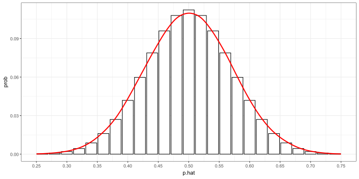
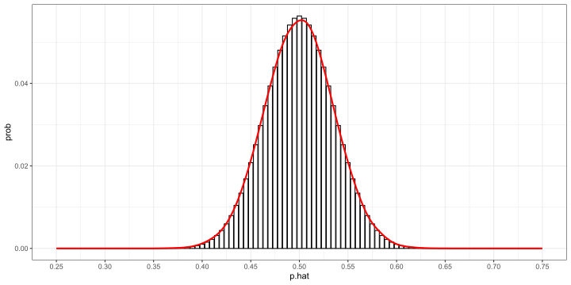
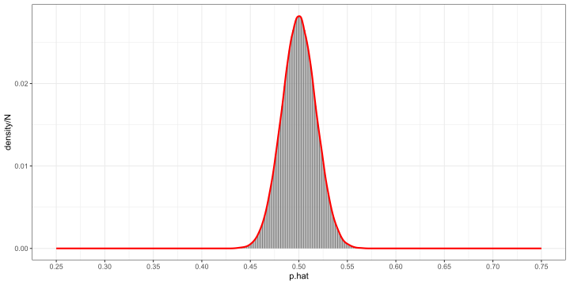
N=3200 ; ggplot(p.hat.theory(N)) + geom_linerange(aes(p.hat,ymin=0,ymax=prob),color="grey50") +
geom_density(data=tibble(X=p.hat.mc(N)),aes(x=X,y=..density../N),adjust=1.5,color="red",size=1) + scale_x_continuous(limits=c(.25,.75),breaks=seq(.25,.75,.05)) + scale_y_continuous(breaks=c(0,.005,.01),labels=c(".000",".005",".010"))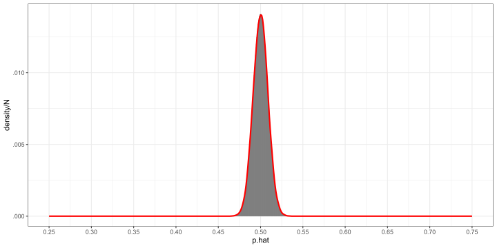
Suppose you conducted a simple random sample of 150 people to survey if they prefer candidate A or candidate B for an upcoming local election where voting is mandatory and there’s no 3rd option. Out of the 150 people surveyed, 90 preferred A, 60 preferred B.
Estimate the proportion of all residents that would support candidate A over B. Do you expect this estimate to be biased? Estimate the SD of this estimate.
\(\hat p=90/150=0.6\). This estimate should be unbiased.
Estimate variance by substituting \(\hat p\) for \(p\), i.e: \[ \v{\hat p}=\frac{p(1-p)}n=\frac{0.6(1-0.6)}{150}=0.0016 \] So SD \(=0.04\)
Extending this further, the method of moments (MOM) uses the moments of a RV, i.e. \(\e{X}\), \(\e{X^2}\), \(\e{X^3}\), … to estimate parameters.
Recall \(\v{X}=\e{X^2}-(\e{X})^2\), so variance also called the second central moment.
Example: suppose we have \(X_i\) iid from an exponential distribution with some unknown \(\lambda\). We know from theory that: \[ \bar X\nto\e{X}=\frac1\lambda \] Therefore it stands to reason that \(\hat\lambda=1/\bar X\) should be a good estimator for \(\lambda\)
Example: suppose we sample from \(X\sim\exp{\lambda=5}\) (ofc normally we don’t know \(\lambda\)). Imagine we repeat the following experiment a large number of times: draw \(n=200\) observations, then apply \(\hat\lambda=1/\bar X\). What is the sampling distribution of \(\hat\lambda\)?
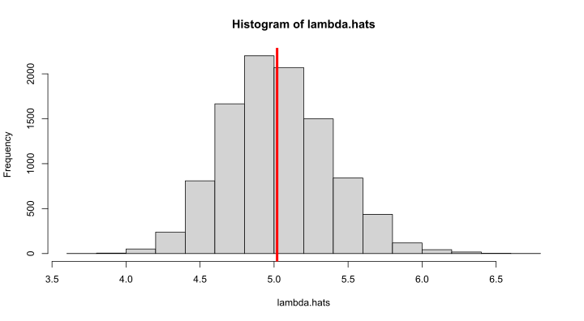
Note: since \(\sigma^2=1/\lambda^2\), also possible to use (sample SD)-1 to estimate \(\lambda\), though generally higher moments have more variance, so may be worse, but let’s test it!
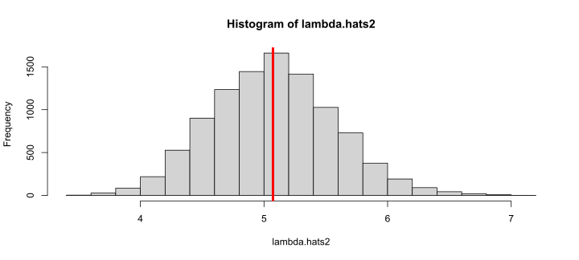
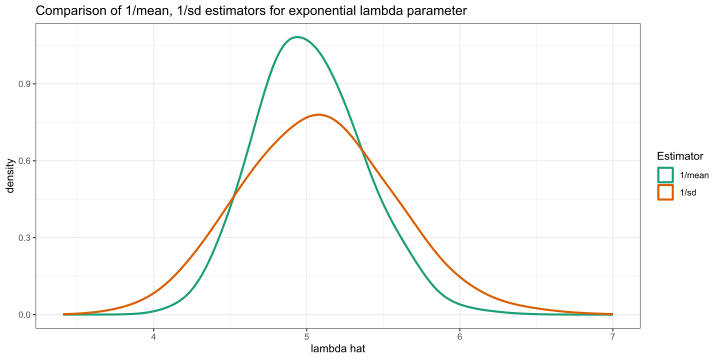
Can also combine moments in expression for more complex problems. Ex:
A Gamma RV takes two parameters, \(\alpha,\theta>0\) (shape & scale parameters).
If \(X\sim\operatorname{Gamma}(\alpha,\theta)\) we have \(\e{X}=\alpha\theta\) and \(\v{X}=\alpha\theta^2\).
Use MOM to define usable \(\hat{\theta}\), \(\hat{\alpha}\) for the two parameters.
Ans:
Other estimators are possible using higher moments or other methods, but these are the simplest using the information available. Demo on next slide.
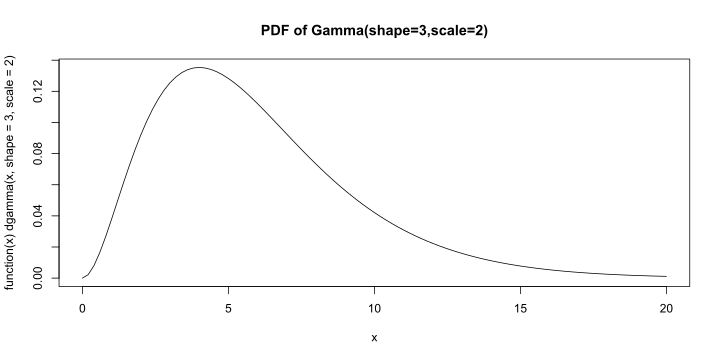
# draw many samples of n=100 and check results of estimators are good (alpha=3,theta=2)
estimates = replicate(1e4, { x=rgamma(100,shape=3,scale=2); c(var(x)/mean(x),mean(x)^2/var(x)) })
alpha.hats = estimates[2,] ; theta.hats = estimates[1,]
hist(alpha.hats) ; abline(v=mean(alpha.hats),col="red",lwd=4)
hist(theta.hats) ; abline(v=mean(theta.hats),col="red",lwd=4)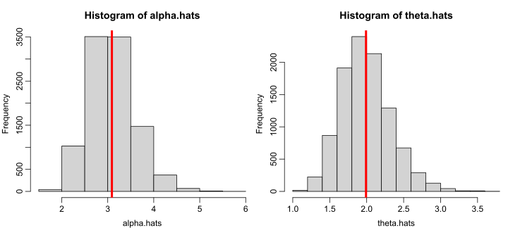
Often, want to know how good a point estimate is, can use confidence interval instead
Review exercise: continuing from previous exercise where 90/150 people surveyed preferred candidate A to B. Give a 95% confidence interval for this result.
Ans: \(\hat p=0.6\) with estimated SD, or standard error (SE) of \(0.04\). To get 95% confidence interval, need about \(2\times\) SE on either side of estimate, so about \((0.52,0.68)\)
Why does this work? Suppose we are trying to estimate a parameter \(\theta\) with our observed sample statistic \(S\). After fitting with \(S\), we resimulate to get a new set of statistics \(S^*\). One can check these are generally approximately true with typical sample sizes:
Together, these properties imply that the distribution of \(S^*\) around \(S\) is similar to the distribution of \(S\) around \(\theta\). Thus, resimulating \(S^*\) around \(S\) estimates the variability of \(S\), which is used to compute the CI.
This is a highly simplified argument. For more mathematical details, see Karl Rohe’s writeup here. Visual demo on next page…
Suppose we sample \(n=100\) from a known normal RV with unknown \(\mu=10\), \(\sigma^2=2^2\). We observe the following sample statistics:
Thus, \(S=\bar X\approx10.22\). Then, we resimulate many times using \(S\) to get distribution of \(S^*\):
Compare distribution of \(S=\bar X\) around \(\mu=10\) with distribution of \(S^*\) around \(S\approx10.22\)
# adjust=3.5 smoothes out S* a bit more, but distorts the density curve,
# hence quantiles of S* later plotted with ±z=2.2 to match distorted density
ggplot() + geom_function(aes(color="S"),fun=\(x)dnorm(x,10,2/10),xlim=c(9.2,10.8),linewidth=1.5) +
geom_density(data=tibble(X=new.means),aes(X,color="S*"),adjust=3.5,linewidth=1.5,key_glyph="path") +
geom_linerange(aes(x=c(10,mean(x))),ymin=0,ymax=1.99) + labs(color="Statistic",x=NULL,y=NULL) +
stat_function(fun=\(x)dnorm(x,10,2/10),geom="area",xlim=c(9.2,9.6),fill="#1d9d79",alpha=.5) +
stat_function(fun=\(x)dnorm(x,10,2/10),geom="area",xlim=c(10.4,10.8),fill="#1d9d79",alpha=.5) +
stat_function(fun=\(x)dnorm(x,ms,ss*1.12),geom="area",xlim=ms+ss*c(-4,-2.2),fill="#d76420",alpha=.5) +
stat_function(fun=\(x)dnorm(x,ms,ss*1.12),geom="area",xlim=ms+ss*c(2.2,4),fill="#d76420",alpha=.5) +
scale_x_continuous(breaks=seq(9.2,10.8,.2),minor_breaks=NULL,expand=0) +
scale_y_continuous(expand=0,limits=c(0,2.1))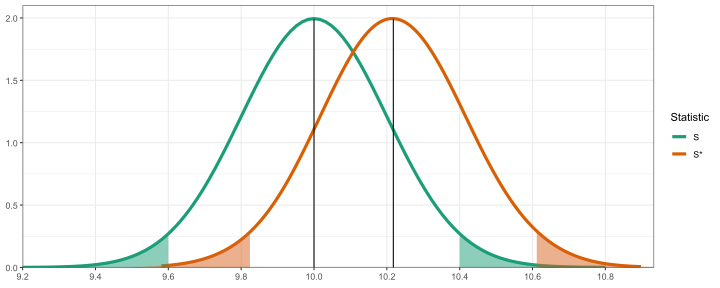
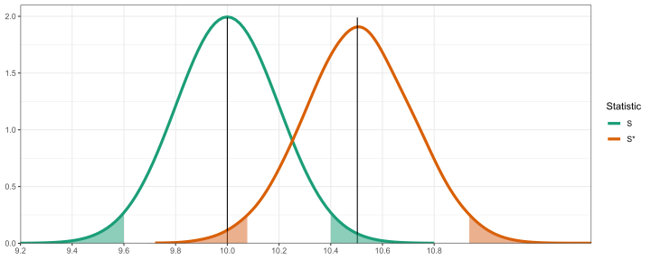
Similar argument/demo approximately applies to other RVs too, not just normal
Suppose we have the following \(n=30\) observations from a Poisson distribution:
6, 7, 8, 12, 6, 12, 13, 9, 9, 4, 6, 5, 9, 7, 10, 8, 10, 16, 7, 10, 12, 6, 9, 5, 6, 7, 2, 7, 11, 7
What’s a good point estimator function?
Give a point estimate of the rate parameter \(\lambda\).
Find a 95% confidence interval for \(\lambda\).
Answer in steps:
More interesting example. In ecology, mark & recapture is a common technique to estimate the population of a species of animals where a 1st sample is marked and released, then later a 2nd sample is taken and the number already marked is counted. Assume in both samples, any animal in population is equally likely to be captured. Let:
Under assumption, \(k/K=n/N\), so an estimator could be \(\hat{N}=nK/k\). This is called the Lincoln–Petersen estimator.
Ex: You’re studying walleyes in Lake Mendota. You catch & mark 500 fish. A few weeks later, you catch another 500, 12 of which were already marked. Give a point estimate for the total walleye population \(N\) in the lake. Ans: using estimator, \(\hat N=500^2/12\approx20833\).
Next, use MC to find a 95% confidence interval for your estimate (follow the checklist!)
(answer in steps) First, simulate one new “observed” \(k\) for \(N=\hat N\):
Different ways to simulate:
# suppose first 1-500 of fish are marked, then can simulate n using sample()
sim = \(N,n=500,K=500) sum(sample(N,K)<=n)
sim(20833)[1] 13# can also approximate with rbinom(), i.e. each fish modeled as n/N chance of being marked
sim2 = \(N,n=500,K=500,M=1) rbinom(M,K,n/N)
sim2(20833)[1] 8# can even approximate with rpois(), i.e. draw fish with averate rate of n*K/N
sim3 = \(N,n=500,K=500,M=1) rpois(M,n*K/N)
sim3(20833)[1] 11Can we check if all three of these give similar results?
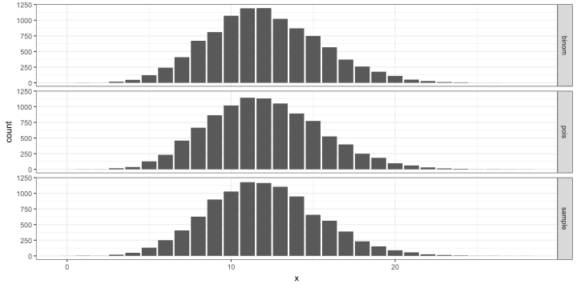
Next, repeat this many times, each time computing \(\hat N\), then take quantiles as CI
2.5% 97.5%
13157.89 41666.67 2.5% 97.5%
13157.89 41666.67 2.5% 97.5%
13157.89 41666.67 All methods give same 95% CI for \(N\) of \((13158,41667)\).
During WWII, some parts of captured German tanks were found to likely have sequential serial numbers. This gave rise to an interesting problem: given a sample of sequential serial numbers, can we statistically estimate the total number of tanks?
Suppose we have the following set of 10 serial numbers from captured tanks below. Model the true population of serial numbers as Discrete Uniform\((1,N)\) where \(N\) is the true total number of tanks. Come up with at least 2 different sensible estimators for \(N\).
37, 362, 162, 294, 177, 261, 217, 204, 363, 84
Ans: the natural thing to try is the sample max, for a second option can use MOM since we know expectation \(\mu=(N+1)/2\) we can use \(\hat N=2\cdot\bar X-1\)
[1] 363[1] 431.2Can you now find a 95% confidence interval?
Sample max works poorly for CI, since using point estimate as true \(N\) then resampling generally gives lower MC resimulated sample max, due to its inherent biasedness
N.max.resim = replicate(1e5, max(sample(N.max,n))) # try max for CI, but result doesn't
quantile(N.max.resim, c(.025, .975)) # even contain original point estimate! 2.5% 97.5%
253 363 N.mom.resim = replicate(1e5, 2*mean(sample(N.mom,n))-1) # MOM estimator is ok though,
quantile(N.mom.resim, c(.025,.975)) # doesn't run into same issue 2.5% 97.5%
277.6 582.2 Follow up: can be shown minimum-variance unbiased estimator (MVUE) is \(M(1\!+\frac1n)\!-\!1\) where \(M\), \(n\) are sample maximum and size. Find the MVUE point & interval estimates
Can also use CLT for CI for the true mean. Suppose \(X\) is some RV (not necessarily normal) with mean \(\mu\) and variance \(\sigma^2\). Generally, if you have \(\approx30\) observations or more, sample mean \(\bar X\) can be treated as approx. normal with mean \(\mu\) and variance \(\sigma^2/n\) even if \(X\) isn’t normal. Then, an approx. 95% CI for \(\mu\) is \(\bar X\pm 1.96 \cdot S/\sqrt n\) where \(S\) is sample SD
Example: we have a sample of 30 wait times in minutes between customers walking into a coffee shop one morning. Find 95% CI for \(\mu\) then use this to find CI for \(\lambda\)
4.5, 7.1, 0.9, 0.8, 2.6, 17.4, 7.4, 3.2, 5.7, 0.9, 8.3, 4.6, 7.4, 26.5, 6.3, 6.2, 11.3, 3.9, 2, 3.5, 14.2, 3.9, 1.8, 3.4, 0.6, 0.4, 3.5, 23.8, 7, 6 (\(\bar X=6.5\), \(S=6.41\))
Finally as a topic, you can use a confidence interval to conduct an equivalent level test. E.g. suppose you want to test if some parameter \(\theta=0\) vs \(\ne0\) at \(\alpha=0.05\).
This is equivalent checking if a 95% confidence interval for \(\theta\) includes 0 or not.
If one-sided alternative used instead with same \(\alpha\), equivalent to checking if 90% confidence interval includes 0.
Please read the following:
Subsection 22.7 in Brian’s notes on CLT based confidence intervals (basically the same as what we did previously in 240)
Short page on MSE of estimators & bias-variance decomposition